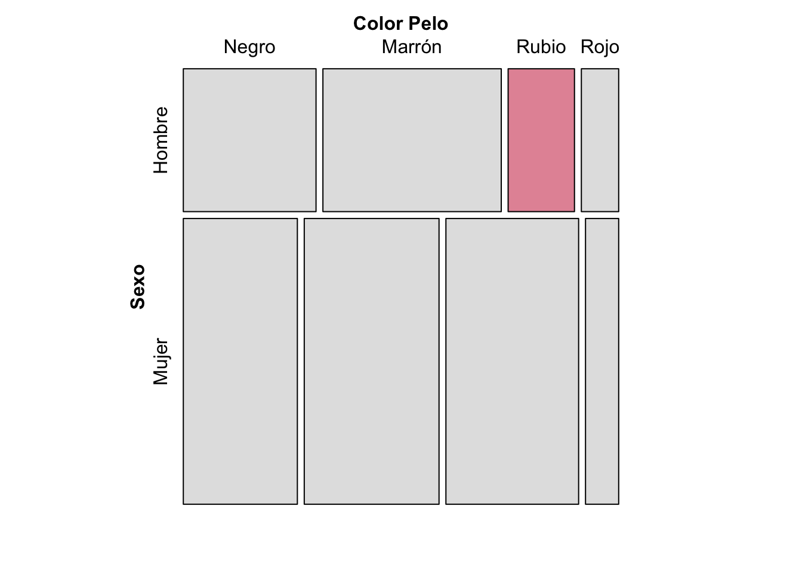
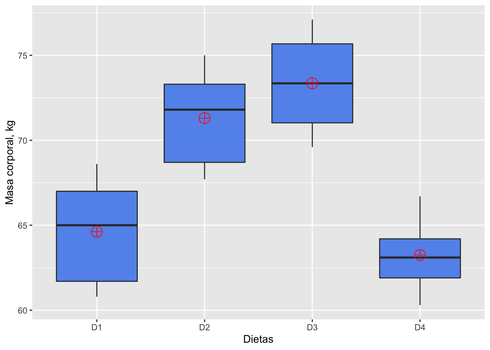
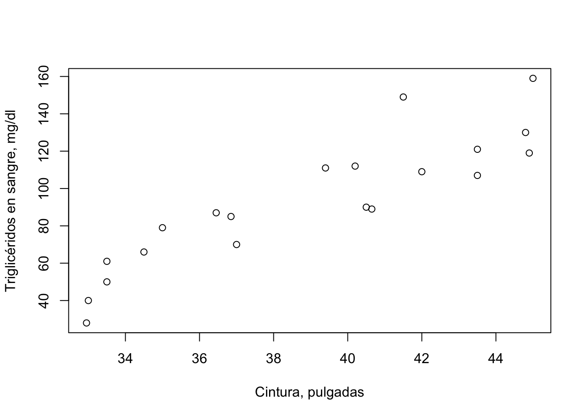
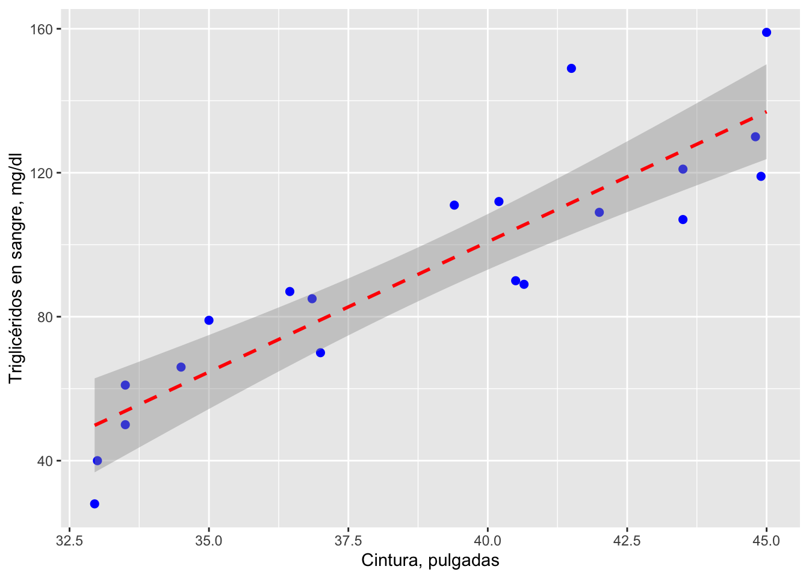

Un principio fundamental de la investigación científica y la adquisición de datos por medio de observaciones y experimentos, es que debemos realizar pruebas estadísticas, no para probar si los datos validan nuestra hipótesis, sino para probar la hipótesis nula que invalida la nuestra. En esta sección utilizarán algunas pruebas de hipótesis de uso común:
Al finalizar esta sección podrás realizar una prueba t e interpretarla
Su uso principal es la comparación de las medias de dos muestra. Asume que las dos muestras provienen de poblaciones con una distribución normal para la variable medida. La hipótesis nula a probar y la alterna son las siguientes: \[H_0 : \mu_a = \mu_b\]
\[H_A : \mu_a \neq \mu_b\] En R esta prueba se puede realizar con la función t.test. A continuación vamos a probar si los efectos de dos drogas, en el tiempo de coagulación sanguínea en conejos, son iguales (\(H_0\)).
#datos
drogaA <- c(8.8,8.4,7.9,8.7,9.1,9.6)
drogaB <- c(9.9,9.0,11.1,9.6,8.7,10.4,9.5)
#prueba
pruebat <- t.test(drogaA,drogaB)
print(pruebat)##
## Welch Two Sample t-test
##
## data: drogaA and drogaB
## t = -2.5454, df = 10.701, p-value = 0.02774
## alternative hypothesis: true difference in means is not equal to 0
## 95 percent confidence interval:
## -1.8543048 -0.1314095
## sample estimates:
## mean of x mean of y
## 8.750000 9.742857El valor de p (p-value) es suficientemente bajo (menor de \(\alpha = 0.05\)) para rechazar la hipótesis nula, de que las medias son iguales.
Al finalizar esta sección podrás realizar una prueba de chi-cuadrado e interpretarla
Queremos probar la independencia entre la característica color de pelo y sexo, en 300 humanos, seleccionando al azar 100 hombres y 200 mujeres. En primer lugar, creamos lo que se conoce como una tabla de contingencia:
| color de pelo | |||||
|---|---|---|---|---|---|
| sexo | NEGRO | MARRON | RUBIO | ROJO | total |
| HOMBRE | 32 | 43 | 16 | 9 | 100 |
| MUJER | 55 | 65 | 64 | 16 | 200 |
| total | 87 | 108 | 80 | 25 | 300 |
La forma más general de plantear las hipótesis es:
\(H_0\): el color del pelo es independiente del sexo en la población muestreada, y
\(H_A\): el color del pelo no es independiente del sexo en la población muestreada.
Con los valores de la tabla de contingencia completa, podemos realizar la prueba \(\chi^2\) en R (chisq.test).
#definimos matriz frecuencias observadas
mfo <- matrix(c(32,43,16,9,55,65,64,16), ncol = 4, byrow = TRUE)
#data frame desde matriz de datos
pelo_sexo <- as.data.frame(mfo)
# prueba
chisq.test(pelo_sexo)##
## Pearson's Chi-squared test
##
## data: pelo_sexo
## X-squared = 8.9872, df = 3, p-value = 0.02946El valor de p (p-value) es suficientemente bajo (menor de \(\alpha = 0.05\)) para rechazar la hipótesis nula, de que el color del pelo y el sexo, son independientes.
Ahora bien, la prueba estadística solo nos indica si se acepta o rechaza la hipótesis nula, pero no nos específica dónde están las principales discrepancias entre las frecuencias, por efecto de la no-independencia entre los variables nominales. Una gráfica de mosaico puede ayudarnos a identificar las categorías entre las que se producen las mayores discrepancias.
library(vcd)
mosaic(mfo, shade = TRUE, legend = FALSE,
labeling_args = list(set_varnames = c(A = "Sexo", B = "Color Pelo")),
set_labels = list(A = c("Hombre","Mujer"), B = c("Negro","Marrón","Rubio","Rojo"))) Figura 1 Gráfica de mosaico para la tabla de contingencia sobre la independencia del color del pelo y el sexo. \(\chi^2\) = 8.9872, p-value = 0.02946
Al finalizar esta sección podrás realizar un análisis de varianza de un factor (One Way ANOVA) e interpretarlo
En una investigación, 19 cerdos jóvenes fueron asignados, al azar, a cuatro grupos experimentales. Cada grupo se alimentó con una dieta diferente (D1, D2, D3, D4). Luego de ser criados hasta adultos, se midió la masa corporal (kg) de cada animal. Queremos saber si la masa corporal resultó ser igual (\(H_0\)) para las cuatro dietas. \[H_0: \mu_1 = \mu_2 = \mu_3 = \mu_4\] \[H_A: la\ masa\ promedio\ de\ los\ cerdos\ no\ resultó\ igual\ en\ todas\ las\ dietas.\]
# datos
D1 <- c(60.8,67,65,68.6,61.7)
D2 <- c(68.7,67.7,75,73.3,71.8)
D3 <- c(69.6,77.1,75.2,71.5)
D4 <- c(61.9,64.2,63.1,66.7,60.3)
#tabla de datos - creación de lista
cerdos <- list(Dieta_1 = D1, Dieta_2 = D2, Dieta_3 = D3, Dieta_4 = D4)
# ajuste por n diferente de cada tratamiento
cerditos <- as.data.frame(lapply(cerdos, `length<-`, max(sapply(cerdos, length))))
cerditos## Dieta_1 Dieta_2 Dieta_3 Dieta_4
## 1 60.8 68.7 69.6 61.9
## 2 67.0 67.7 77.1 64.2
## 3 65.0 75.0 75.2 63.1
## 4 68.6 73.3 71.5 66.7
## 5 61.7 71.8 NA 60.3# arreglo de datos en un data frame
#data frame de dos columnas con factor Dieta
df.cerdos <- data.frame(Dieta=c(rep("D1", times=length(D1)),
rep("D2", times=length(D2)),
rep("D3", times=length(D3)),
rep("D4", times=length(D4))),
masa=c(D1, D2, D3, D4))
# box-plot para cada tratamiento
library(ggplot2)
ggplot(df.cerdos, aes(x=Dieta, y=masa)) +
geom_boxplot(fill="cornflowerblue") +
stat_summary(fun=mean, geom="point", shape=10, size=5,
color="red", fill="red") +
labs(x = "Dietas", y = "Masa corporal, kg")
Figura 2 Gráficas de box&whisker de la masa corporal (kg), de cuatro grupos de cerdos (n =4,5), luego de estar en cuatro dietas diferentes.
analisis <- aov(masa ~ Dieta, df.cerdos)
summary(analisis)## Df Sum Sq Mean Sq F value Pr(>F)
## Dieta 3 338.9 112.98 12.04 0.000283 ***
## Residuals 15 140.8 9.38
## ---
## Signif. codes: 0 '***' 0.001 '**' 0.01 '*' 0.05 '.' 0.1 ' ' 1El valor de P para el estadístico F (Pr(>F)) es significativo para rechazar la hipótesis nula. Sin embargo, este análisis no nos indica cuál o cuáles tratamientos son diferentes entre sí, para esto hay que realizar pruebas post-hoc, como la prueba Tukey.
Al finalizar esta sección podrás realizar una análisis de regresión lineal simple e interpretarlo
Una regresión lineal simple modela el efecto de una variable predictora continua sobre una variable de respuesta continua. La ecuación de regresión resultante se puede representar gráficamente como una línea de regresión, que representa los valores esperados de la variable de respuesta para todos los valores de la variable predictora.
En la regresión lineal simple, la relación funcional entre la variable dependiente (y) y la independiente (x) se representa:
\[\mu_y = \alpha + \beta x\]
donde:
\(\mu_y\): es la media poblacional de y para cualquier valor de x,
\(\alpha\): es el intercepto y
\(\beta\): es la pendiente.
Tenemos datos de individuos entre 21 y 79 años, a los cuales se le midió el perímetro a nivel de la cintura y la concentración plasmática de triglicéridos, y establecimos un modelo de regresión, en el cual el nivel de triglicéridos depende del valor de cintura. Vamos a probar si la pendiente de la ecuación de regresión tiene un valor diferente de 0, por lo tanto nuestra hipótesis nula será:
\[\beta = 0\]
# datos
trigli <- read.csv("data/triglicerido.csv")
# gráfica exploratoria
plot(trigli$cintura, trigli$trigliceridos,
xlab = "Cintura, pulgadas", ylab = "Triglicéridos en sangre, mg/dl")
Figura 3 Triglicéridos en sangre (mg/dl) en relación al perímetro de la cintura (pulgadas), en individuos entre 21 y 79 años.
regrtest <- lm(trigliceridos ~ cintura, data = trigli)
summary(regrtest)##
## Call:
## lm(formula = trigliceridos ~ cintura, data = trigli)
##
## Residuals:
## Min 1Q Median 3Q Max
## -21.814 -11.236 -4.454 10.281 37.349
##
## Coefficients:
## Estimate Std. Error t value Pr(>|t|)
## (Intercept) -188.4947 33.3154 -5.658 2.29e-05 ***
## cintura 7.2324 0.8508 8.501 1.02e-07 ***
## ---
## Signif. codes: 0 '***' 0.001 '**' 0.01 '*' 0.05 '.' 0.1 ' ' 1
##
## Residual standard error: 15.94 on 18 degrees of freedom
## Multiple R-squared: 0.8006, Adjusted R-squared: 0.7895
## F-statistic: 72.27 on 1 and 18 DF, p-value: 1.021e-07alfa <- regrtest$coefficients[1]
alfa <- round(alfa[[1]], digits = 2)
beta <- regrtest$coefficients[2]
beta <- round(beta[[1]], digits = 2)La ecuación de regresión será:
Triglicéridos = -188.49 + 7.23*cintura
library(ggplot2)
ggplot(data=trigli, aes(x=cintura, y=trigliceridos)) +
geom_point(pch=19, color="blue", size=2) +
geom_smooth(method="lm", color="red", linetype=2) +
labs(x="Cintura, pulgadas", y="Triglicéridos en sangre, mg/dl")
Figura 4 Línea de regresión e intervalo de confianza (95%) para la relación entre el nivel de triglicéridos en la sangre y el perímetro de la cintura.